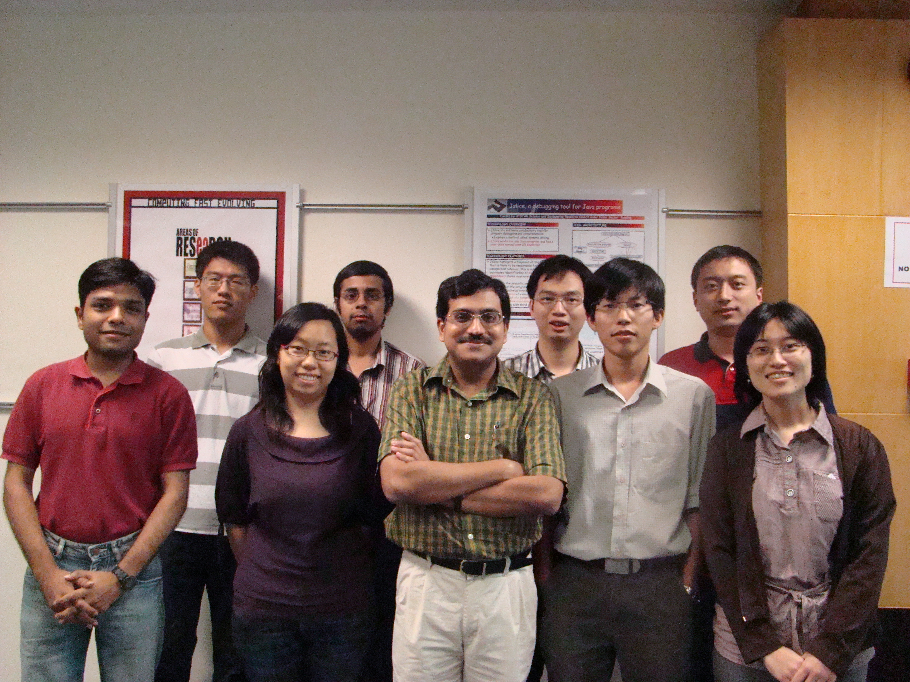

e-SAVVY: Embedded Software Analysis to Validate and VerifY
[Group Photo November 2012]
In photo, from right to left:
Front row: Sandeep Kumar, Dawei Qi, Sudipta Chattopadhyay, P.V. Thuan, Abhik Roychoudhury, Bruno C.d.S. Oliveira, Marcel Bohme, Shin Hwei Tan, Tushar Mehta
Back row: Sergey Mechtaev, Lee Kee Chong, Abhijeet Banerjee, R. Lavanya, Clement Ballabriga
Missing in the photo: Jooyong Lee (Yi).
[Group Photo 2009]

From right to left:
Front row: Vivy Suhendra, Trung, Abhik Roychoudhury, Shanshan Liu, Ankit Goel
Back row: Lei Ju, B.K. Huynh, Sudipta Chattopadhyay, Dawei Qi.
ABOUT US
Too many functionalities in our daily life are software
controlled, and reliable software development is thus of
great importance. Examples of (embedded) software controlled
devices abound in our daily lives. These include regular
household devices such as washing machine controllers as
well as safety critical devices such as controllers for
patient healthcare monitoring.
In the e-SAVVY research group, our focus is on building
software productivity tools which enhance software quality
as well as programmer productivity. Our research typically
targets standard programming languages and focuses on
building scalable usable program analysis methods and tools.
Two meaningful examples of such endeavor are the JSlice
dynamic analysis tool for Java program debugging, and the
Chronos static analysis tool for ensuring time-predictable
execution of embedded software. Such tools have a
substantial user-base spread across many different countries
and have usage in teaching/development apart from research.
Our research takes a holistic view of reliable software
development - focusing on functional as well as extra-functional issues, and
considering the interplay between software modeling, static analysis, dynamic
analysis and verification. The distinguishing aspect of our research lie in our
desire to improve the state-of-the-practice in software engineering (rather than
the so called state-of-the-art), as evidenced by the results from several of our
projects on software debugging and verification.